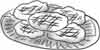

Something You Can Do
Do you know someone that is a big pain? Maybe they ruin your things. Maybe they just try to annoy you or tease you in a mean way. When you want to play they leave you out or try to take the best toys. Maybe they call you names or say mean things about you. If you know someone like that, Jesus has something for you to do to them—
Bless Them That Curse You
How can you do that? Well, let me first tell you some important ingredients to make it work right. You will need:

- Trust in God
- Forgiveness and Love
- Cheerfulness
- and lots of Patience

- Start by praying for your problem person. Do you believe God loves them? Ask God to help you to forgive them and love them, too. Sometimes that is a very hard thing to do. When you really want to do good to them, go on to #2.
- How can you bless someone who doesn’t like you? Ask God to show you ways that you can be a blessing to them. Maybe they don’t like you whistling. You can stop that. Maybe they say mean things to you. Don’t make a face or tattle, but be quiet or say something kind instead.
- The Bible says “overcome evil with good” and “do good to them that hate you.” Doing good doesn’t mean giving them everything they want. It means thinking of ways you can be really kind and helpful to them. What would show them God’s love? He is kind to the the unthankful every day. Here are a few ideas to get you started:

- Send a card for their birthday or when they are sick
- Bake their favorite cookies
- Do a job for them, or help them with their work
- Give them a smile for every sour look
- Share a treat that you know they would enjoy it
- If they don’t invite you to play, plan something special to invite them to
- Try to turn your enemies into your friends. Remember, you must first be friendly to them. Think about them, and not just about what you like or want. Be a true friend to them and not just a “fair-weather” friend that stays around only when it is fun.
- And don’t forget to pray for them every day!